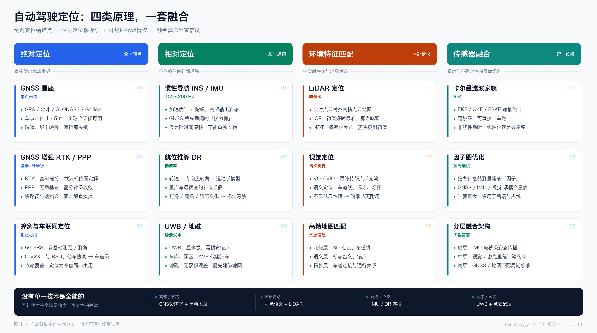
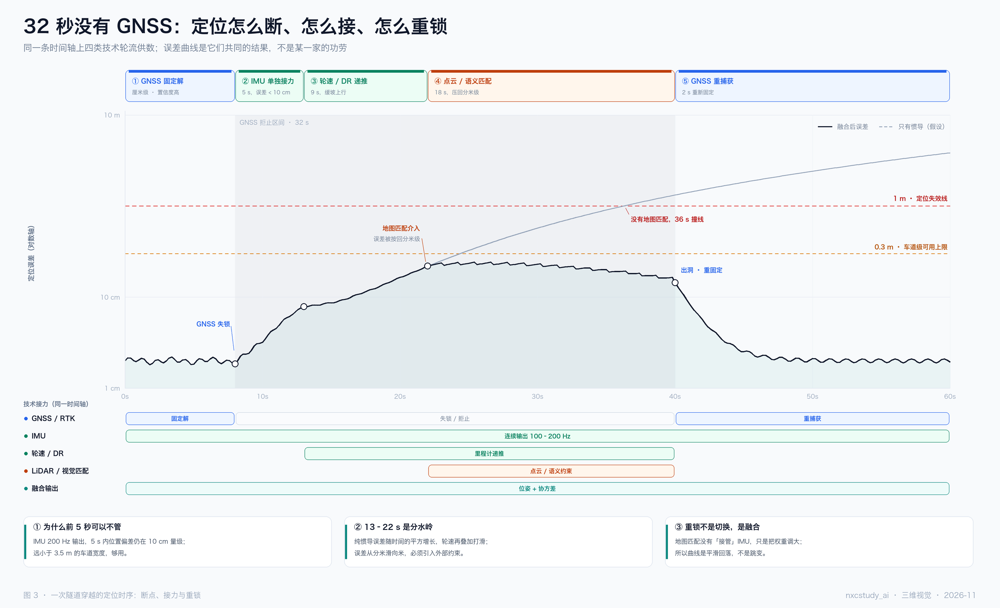
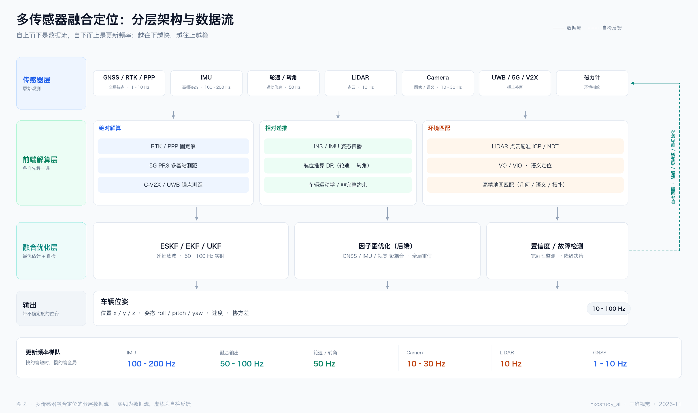
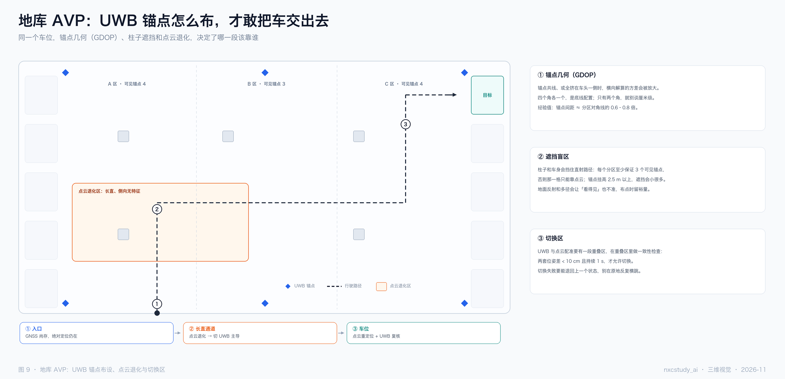
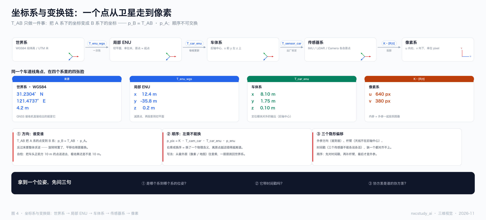
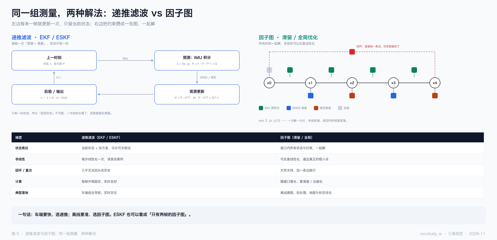
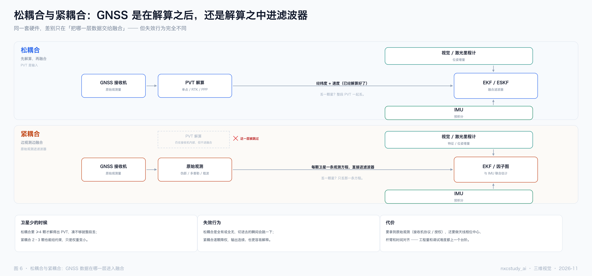
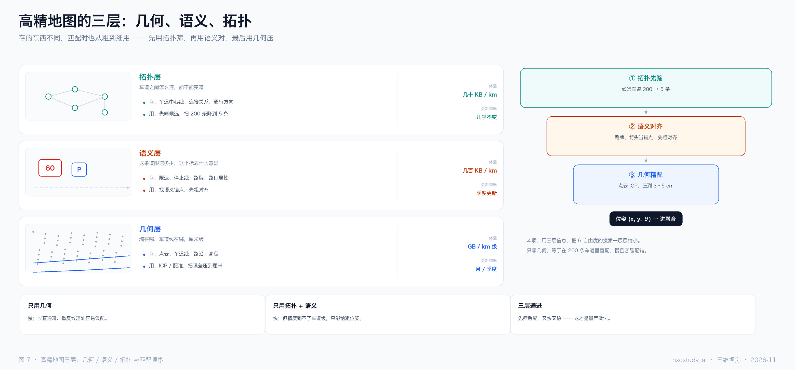
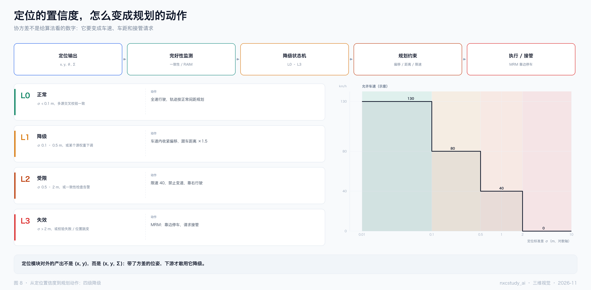

三维视觉 · 自动驾驶定位
从技术全景
到一次隧道穿越
自动驾驶定位 · 九张图的读法
定位不是一个模块，是一套排班表：绝对定位给锚点，相对定位保连续，环境匹配做精校，融合算法把它们拧成一个带方差的位姿。
这份文档逐张解释九张图：前三张讲"有哪些手段、怎么组织、时间上是什么样"，中间四张是四张放大镜（坐标系、滤波器、耦合方式、地图），最后两张是落地图（下游怎么降级、地库怎么布点）。




2026-11 · 笔记 / 读图说明9 张图 · 13 页
自动驾驶定位 · 读图说明〇、九张图一览
〇九张图各回答什么
先看表，再看图。每张图都只回答一个问题；九张合起来，才是"定位"这件事的完整轮廓。
| # | 回答的问题 | 一句话结论 |
|---|
| 1 | 定位到底有哪些技术 | 四类信息来源，各自都有天花板；场景不同，主角不同 |
| 2 | 这些技术怎么组织 | 四层数据流，加一条自检回路；频率从 200 Hz 到 5 Hz |
| 3 | 断掉时会发生什么 | 32 秒四次接力，误差被按在 0.3 m 以下 |
| 4 | 位姿到底在哪个系 | 五个系、四次变换，顺序不可交换 |
| 5 | 融合有哪两种范式 | 递推求快，因子图求准；ESKF 约等于两帧因子图 |
| 6 | GNSS 在哪一层进来 | 解算之后进来叫松，解算之中进来叫紧 |
| 7 | 地图匹配用的是什么 | 拓扑筛、语义对、几何压，三层递进 |
| 8 | 置信度往下游怎么用 | 协方差要变成车速、车距和接管请求 |
| 9 | 没有 GNSS 的地库怎么办 | UWB 的精度由锚点几何决定，不是由硬件 |
一句话主线：图 1 说"有哪些手段"，图 2 说"怎么组织"，图 3 说"组织起来在时间上是什么样"；图 4–7 是四张放大镜，图 8–9 是两张落地图。
为什么是这九张
定位这个话题最容易讲成"技术清单"：GNSS、IMU、LiDAR、视觉、UWB 一路排下去。但清单不能回答两个真问题——它们怎么协同，以及断掉一个会怎样。所以这套图的重心不在"有哪几种技术"，而在图 2 的层、图 3 的时间轴，以及图 8 的降级链。
读法建议：先看第 1、2 页建立骨架，再看第 3 页（隧道）理解"为什么必须融合"，最后按需翻中间的放大镜。
如果只有十分钟：图 1 → 图 3 → 图 8，主线就通了。
自动驾驶定位 · 读图说明02
自动驾驶定位 · 读图说明一、技术全景
01四类原理：没有一种技术是全能的
这四类不是"四种方案备选"，是四种信息来源：绝对定位给地球坐标，相对定位给自身运动，环境匹配给局部校正，融合负责把它们拧成一个带置信度的位姿。
图 1 · 四类原理并排，每类三张卡：是什么 → 能做到多少 → 卡在哪
- 每列第三行都是"卡在哪"。定位选型不是选"谁更准"，是选"你能接受哪种失效"——RTK 掉固定解、IMU 漂移、点云被雨雾打散，失效方式完全不同。
- 精度不是一个数，是一个前提。RTK 的厘米级前提是固定解，固定解的前提是"看得见天"。条件一破，精度是断崖式归零，不是缓慢下降。
- 底部的场景条是全图的落点：高速靠 GNSS + 地图，城市靠视觉语义 + LiDAR，隧道靠 IMU / DR，地库靠 UWB + 点云。同一条路，四段路四个主角。
读这张图时容易漏掉的是列与列之间其实是互补关系：绝对定位的短板（遮挡）正好是相对定位的长处（不依赖外部），相对定位的短板（漂移）又正好是环境匹配的长处（绝对约束）。互补性才是这张图真正想说的。
自动驾驶定位 · 读图说明03
自动驾驶定位 · 读图说明二、分层架构
02四层数据流，加一条自检回路
从上到下是数据流，从下到上是更新频率：越往下越快，越往上越稳。融合层的存在，就是为了让这两头能对上。
图 2 · 传感器 → 前端解算 → 融合优化 → 输出，右侧虚线为自检回路
- 前端解算层被拆成三支（绝对 / 相对 / 环境），这三支正是图 1 四类里去掉"融合"之后剩下的三个——融合不属于前端，它是横向的一层。
- 右侧那条虚线是自检回路。置信度和故障检测不只是"输出一个数"，它会反向触发降级、切换源、重初始化。
- 底部频率梯队是"为什么要分层"的答案：IMU 200 Hz、相机 30 Hz、GNSS 5 Hz。快的管短时，慢的管全局，中间必须有东西把它们对齐。
层与层之间传递的不是数字，是带不确定度的数字。少了协方差，上一层就没法判断"这一帧该信多少"——这也是为什么图 8 要把 Σ 一路带到规划。
自动驾驶定位 · 读图说明04
自动驾驶定位 · 读图说明三、隧道时序
0332 秒没有 GNSS：断、接、重锁
这张图有两条曲线：黑实线是融合后的误差，灰虚线是"假设第 22 秒没有地图匹配"。两条线在第 22 秒分岔——那就是全图的转折点。
图 3 · 误差曲线（对数轴）+ 五段相位 + 同一时间轴上的技术接力
- 五个相位：固定解（0–8 s）→ IMU 单独接力（8–13 s）→ 轮速 / DR（13–22 s）→ 点云 / 语义匹配（22–40 s）→ 重捕获（40–60 s）。
- 两条阈值线给"能用"下了定义：0.3 m 是车道级可用上限，1 m 是定位失效线。黑线一次都没碰 0.3，灰线在第 36 秒撞上 1 m。
- 重锁不是切换，是融合。曲线在 40 秒陡降，但不是某个模块"接管"，而是匹配帧把累积误差一次性拉回，所以是平滑回落，不是跳变。
纵轴是对数的，这点很关键：纯惯导误差随时间的平方增长，在对数轴上才既能看清 2 cm 的平段，又能看到 4 m 的失控段。画成线性轴，"前 5 秒不用管"这个节奏就丢了。
自动驾驶定位 · 读图说明05
自动驾驶定位 · 读图说明四、坐标系与变换链
04一个点从卫星走到像素
五个系、四次变换。每个箭头旁边都标了"这个变换是谁给的"：一次性、每帧更新、出厂标定、内参——变换的来源决定了它什么时候会变。

图 4 · 世界系 → 局部 ENU → 车体系 → 传感器系 → 像素系
- 方向：
T_AB 把 A 系的点变到 B 系（p_B = T_AB · p_A）。反过来要整体求逆——旋转转置了，平移也得跟着换。
- 顺序：
p_pix = K · T_cam_car · T_car_enu · p_enu。从最外层往内乘，一层层剥回世界系；换序就等于换了一个物理含义。
- 三个隐形偏移：外参方向、杆臂（GNSS 天线不在后轴中心）、时间戳。图纸上画不出来的，往往就是上车后对不齐的那几处。
中间那排是"同一个车道线角点在四个系里的四张脸"（数值为示意，量级是对的）。这张图最有用的地方不是那五个框，而是底部黑条的三问：哪个系到哪个系？带时间戳吗？协方差是谁的？
自动驾驶定位 · 读图说明06
自动驾驶定位 · 读图说明五、递推滤波与因子图
05同一组测量，两种解法
左边是个环，右边是张图。差别不在精度，在能不能反悔。

图 5 · 左：预测—更新—输出—下一帧；右：节点 + 因子，回环就是加一条边
- 递推只有一份状态，每帧算完就翻篇。一次线性化错了，误差就留在里面，几乎无法回头改历史。
- 因子图把所有约束攒着一起解，非线性强时可以反复线性化，逼近真正的极小点；回环重访只需要加一条边。
- 选型见表格最后一行：车端实时选递推（EKF / ESKF），离线建图、后处理、标定优化选因子图。
一句话可以记住两者的关系：ESKF 约等于"只有两帧的因子图"——它把历史压缩进了协方差 P 里。理解这一点，"为什么要用因子图"就不需要再解释了。
自动驾驶定位 · 读图说明07
自动驾驶定位 · 读图说明六、松耦合与紧耦合
06GNSS 在哪一层进滤波器
两幅图长得几乎一样，差别只有一处：交给滤波器的到底是经纬度，还是伪距 / 多普勒 / 载波。

图 6 · 上：松耦合（PVT 是输入）；下：紧耦合（原始观测直接进滤波器，PVT 被跳过）
- 松耦合的 PVT 是个黑盒：≥4 颗星才解得出，解不出就整段丢——全有或全无，切进去的瞬间还会跳一下。
- 紧耦合把解算搬进滤波器：2–3 颗星也能贡献约束，逐颗降权，输出连续，也更容易解释。
- 代价是要拿原始观测（接收机协议 / 授权），还要做天线相位中心、杆臂和时间对齐。工程量和调试难度都上一个台阶。
图里那个被打叉的"PVT 解算"框，说的不是"不需要解算"，而是这一层被跳过了：接收机内部照样解 PVT，只是它的输出不再进入融合。这一点最容易画错，也最容易讲错。
自动驾驶定位 · 读图说明08
自动驾驶定位 · 读图说明七、高精地图三层
07拓扑筛、语义对、几何压
三层不是"三个文件"，是三种抽象级别：拓扑管连通，语义管含义，几何管位置。匹配时也按这个顺序，从粗到细。

图 7 · 左：三层各存什么、怎么用；右：从 200 条候选筛到厘米级的漏斗
- 体量差三个数量级：拓扑几十 KB/km，语义几百 KB/km，几何 GB/km 级。这也决定了更新频率——拓扑几乎不变，语义季度更新，几何按月。
- 匹配是从粗到细：先用拓扑把 200 条候选车道筛到 5 条，再用语义（路牌、箭头）找锚点粗对齐，最后用几何（点云 ICP、车道线）压到 3–5 cm。
- 只用一层都不行：只靠几何，等于在 200 条车道里盲配，慢且容易配错；只靠拓扑 + 语义，快但精度到不了车道级。
这张图回答的是图 1 里"高精地图匹配"那张卡：匹配不是一个算法，是一个从粗到细的流程。任何一步跳过，后面都会用算力去还债。
自动驾驶定位 · 读图说明09
自动驾驶定位 · 读图说明八、置信度到下游
08协方差要变成车速、车距和接管
定位对外的产出不是 (x, y)，是 (x, y, Σ)。上面那条流水线说明它去哪：定位输出 → 完好性监测 → 降级状态机 → 规划约束 → 执行 / 接管。

图 8 · 四级降级（L0–L3）与"允许车速 vs σ"的阶梯（示意）
- 四级降级有明确判据：L0 正常（σ < 0.1 m）→ L1 降级（0.1–0.5 m，收紧偏移、车距 ×1.5）→ L2 受限（0.5–2 m，限速 40、禁变道）→ L3 失效（> 2 m，MRM 靠边停车）。
- 右侧阶梯图的数值不用记，形状要记住：协方差每上一个台阶，规划就少一分自由——它是阶梯，不是斜坡。
- 判据不只靠 σ，还要靠多源一致性和位置跳变检测。单看方差，会被一次平滑的错误估计骗过去。
这张图是"定位"和"决策规划"之间的接口图。看完它应该能回答一个问题：如果定位飘了 50 cm，车会做什么？——如果答不出来，说明降级策略还没定义。
自动驾驶定位 · 读图说明10
自动驾驶定位 · 读图说明九、地库 AVP
09UWB 的精度由锚点几何决定
地库里没有 GNSS，靠 UWB + 点云。但 UWB 的精度完全由锚点几何决定（GDOP）——同一批硬件，布点不同，精度能差一个量级。
图 9 · 平面布点示意：六个锚点、A / B / C 三个分区、点云退化区与切换区
- 锚点共线、或全挤在车头一侧时，横向解算的方差会被放大。四个角各一个，是底线配置；只有两个角，就别谈厘米级。
- 柱子和车身会挡住直射路径：每个分区至少保证 3 个可见锚点，否则那一格只能靠点云；锚点挂高 2.5 m 以上，遮挡会小很多。
- 切换区要有一段重叠：两套位姿差 < 10 cm 且持续 1 s 才允许切换，切的时候别停。
图上的 A / B / C 标了"可见锚点 4 / 3 / 4"，这就是布点的验收标准：不是"有没有信号"，而是每个分区够不够解算。这张图的数值是示意的，验收逻辑是真的。
自动驾驶定位 · 读图说明11
自动驾驶定位 · 读图说明十、串起来读
10把九张图串起来读
一条主线：图 1 说"有哪些手段"，图 2 说"怎么组织"，图 3 说"组织起来在时间上是什么样"；图 4–7 是四张放大镜，图 8–9 是两张落地图。
| 层 | 图 | 它在回答什么 |
|---|
| 全局 | 图 1 · 技术全景 | 信息来源有几类，各自的失效方式 |
| 结构 | 图 2 · 分层架构 | 怎么把它们排成四层，频率怎么对齐 |
| 时间 | 图 3 · 隧道时序 | 断掉以后，误差曲线长什么样 |
| 放大镜 | 图 4 · 坐标系 | 位姿在哪个系，变换怎么串 |
| 放大镜 | 图 5 · 滤波器 | 怎么解，能不能反悔 |
| 放大镜 | 图 6 · 耦合方式 | 数据在哪一层进来 |
| 放大镜 | 图 7 · 地图三层 | 拿什么对齐，从粗到细 |
| 落地 | 图 8 · 降级链 | 置信度怎么变成动作 |
| 落地 | 图 9 · 地库布点 | 没有 GNSS 时靠什么、怎么验收 |
画这九张图时守的三条规矩
- 别把"融合"画成并列的第五类技术。它是横向的：图 1 里单独一列，是因为它不产生观测、只组合观测；图 2 里它是第三层，位置在"解算之后、输出之前"。
- 隧道图里误差不能画成直线。纵轴是对数、横轴才是线性时间；纯惯导误差随时间的平方增长，画成直线就把"前 5 秒不用管、十几秒开始难看"的节奏丢了。
- 松耦合与紧耦合不是两条并行链路。硬件、传感器、滤波器全一样，唯一变量是"交给滤波器的是解算结果还是原始观测"。两幅图的框子位置故意画成一样，就是为了让这个变量显眼。
如果只记一句：定位的产出是带方差的位姿，不是坐标。少了那个 Σ，后面所有的降级、限速、接管都无从谈起。
自动驾驶定位 · 读图说明12
自动驾驶定位 · 读图说明十一、附：源文件
11图片与可编辑源文件
| 文件 | 说明 |
|---|
assets/…-图1-技术全景.png | 图 1，3120×1742，2× 高清 |
assets/…-图2-分层架构.png | 图 2，3120×1846 |
assets/…-图3-隧道时序.png | 图 3，3120×1898 |
assets/…-图4-坐标系变换链.png | 图 4，3120×1417 |
assets/…-图5-递推与因子图.png | 图 5，3120×1508 |
assets/…-图6-松紧耦合.png | 图 6，3120×1456 |
assets/…-图7-地图三层.png | 图 7，3120×1456 |
assets/…-图8-置信度降级.png | 图 8，3120×1534 |
assets/…-图9-地库AVP.png | 图 9，3120×1508 |
assets/_make_localization.py | 九张图的源文件（纯 Pillow 直绘，无浏览器依赖） |
assets/_make_loc_note.html | 本 PDF 的排版源文件 |
※ 文件名前缀统一为 2026-11-自动驾驶定位-。
重出九张图
cd "assets" # 需已安装 Pillow
python3 _make_localization.py . # 覆盖输出九张 PNG
重出这份 PDF
CHROME="/Applications/Google Chrome.app/Contents/MacOS/Google Chrome"
"$CHROME" --headless=new --disable-gpu --no-pdf-header-footer \
--print-to-pdf="2026-11-自动驾驶定位-读图说明.pdf" \
"file://$PWD/assets/_make_loc_note.html"
图里的配色只有四组：蓝＝绝对定位，绿＝相对定位，橙＝环境匹配，青＝融合。九张图共用这一套，看到颜色就知道在说哪一类，不用每次重新认图例。
自动驾驶定位 · 读图说明13